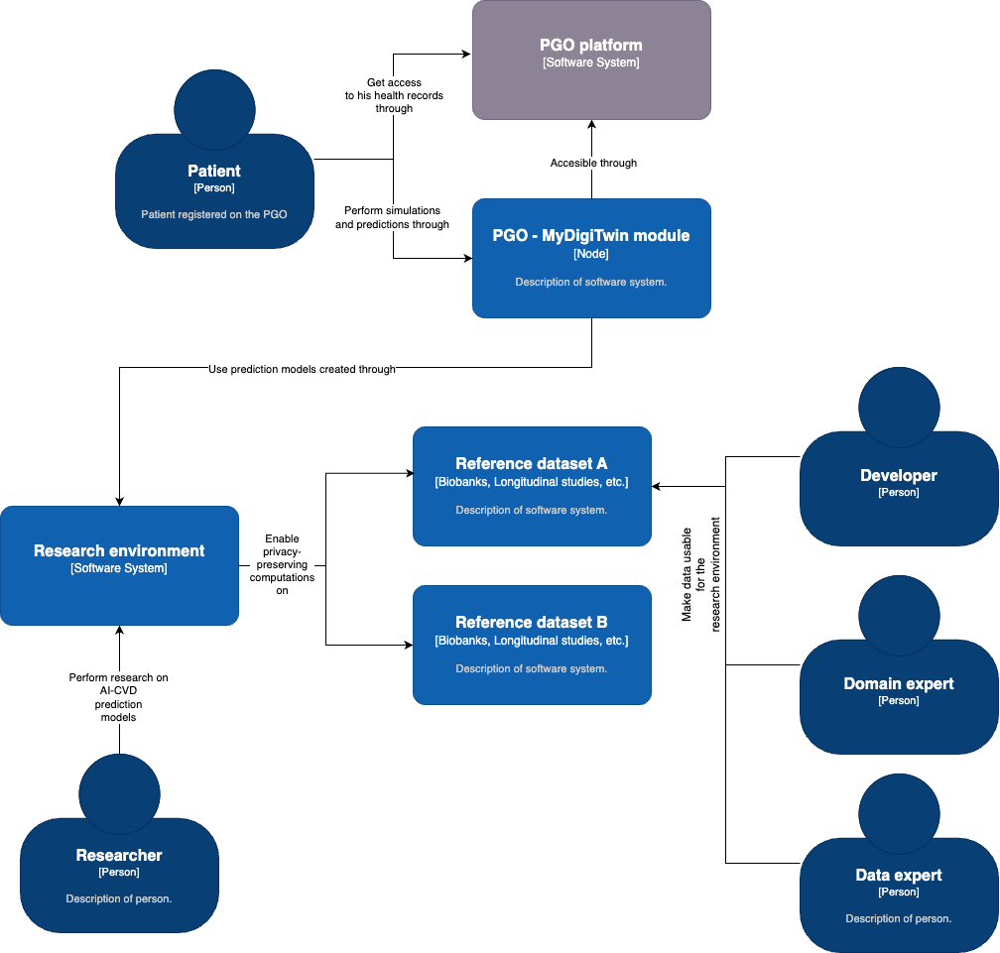
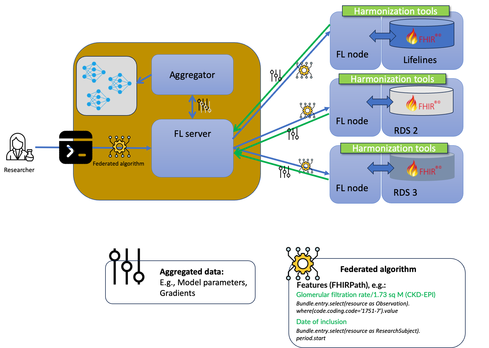
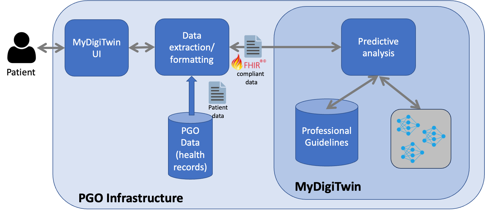
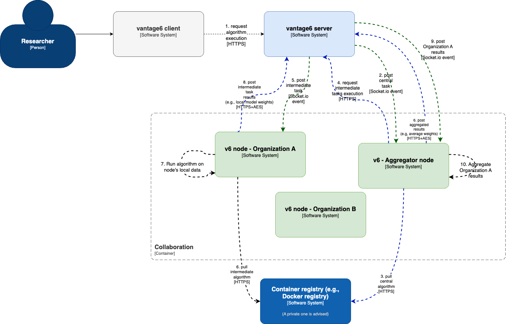
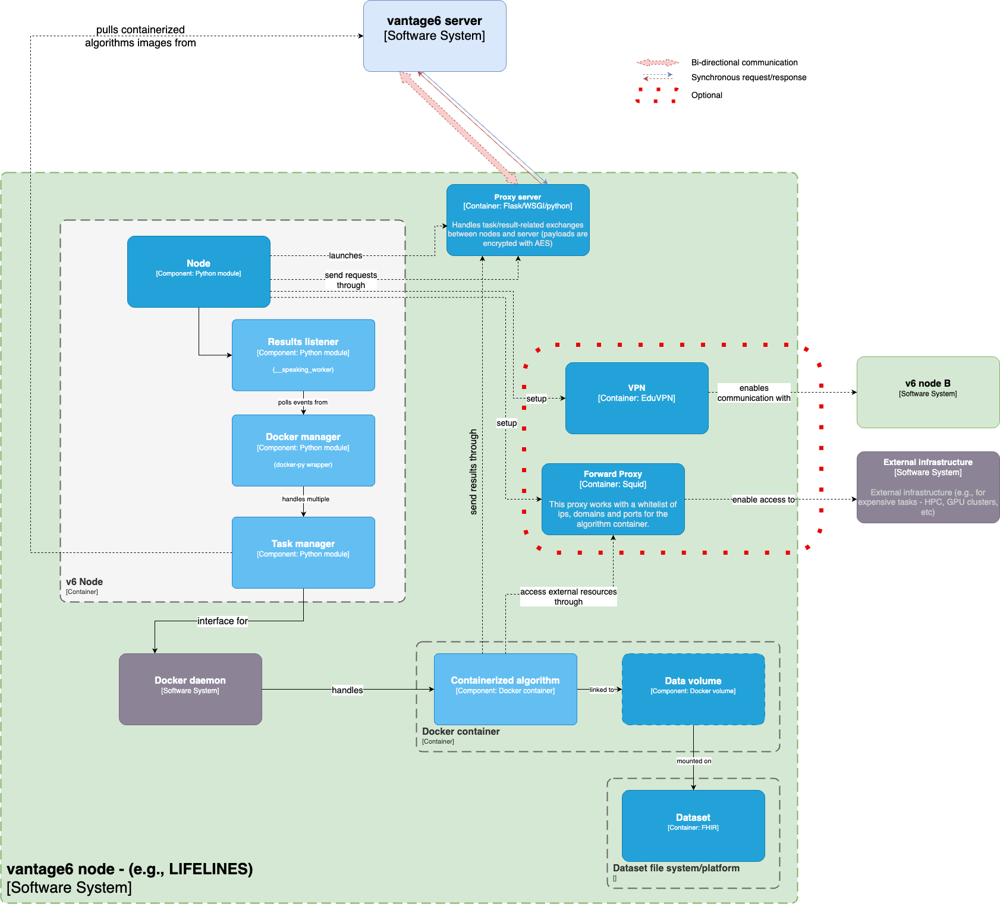
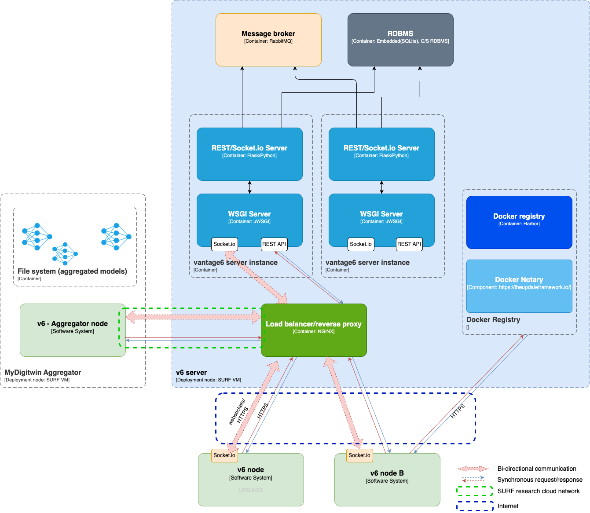

Building Block View
L1. System context
MyDigiTwin is a scientific endeavor led by a consortium comprised of scientific and commercial partners within the health domain. Consequently, MyDigiTwin as a technological product has two fundamental 'embodiments' given each partner's main viewpoint: a patient-oriented user-friendly product to be integrated into PGOs' infrastructure, and a research environment where scientists can develop the AI-based back-bone of the said product, that is to say, CVD prediction models.
These prediction models are expected to be created from multiple big-data reference datasets combined, which would be included in this research environment as they become available. Given all the above -as described in the diagram below- in addition to the researchers and the patients, the system will involve developers, domain experts, and data experts who will work on the integration of these reference datasets. In particular, they are expected to work on tasks such as data harmonization, infrastructure configuration, and model tuning (e.g.,. for multi-data statistical homogeneity).

Also according to the diagram, it is important to highlight that there won't be any kind of application-level interoperability between the end-user environment (which would be eventually deployed on multiple PGOs) and the research one. Instead, the PGOs will get access to the prediction models trained in the research environment, once the researchers have validated them. This improves privacy (for PGOs data and reference datasets) by ensuring that there won't be an exchange of patient information outside of the PGO environment. Furthermore, avoiding direct interoperability between the MyDigiTwin module, and the research infrastructure, would also prevent scalability and computing-power costs issues with the reference datasets infrastructure (which are often limited as they are intended for research purposes only). This is due to the fact that this module would be eventually running on multiple PGOs, where each one, in turn, would be handling concurrent simulation or prediction requests from many patients.
L2. Research environment
Privacy-preserving Federated Learning (L2)
Ensuring that all MyDigiTwin partners, in particular researchers, can use health data without compromising individual privacy is one of the system's quality goals. With this motivation, the core element of the research environment is a privacy-preserving federated learning architecture. This architecture (also referred to as Personal Health Train, or PHT, in the health care domain) allows multiple parties to collaboratively train models, or perform data analysis, without sharing raw data. Instead, each party performs local computations and updates on their data, and the model updates are shared with one that aggregates them into a global model.
As illustrated in the diagram below, each reference dataset would be part of the federated learning architecture as a node. Each node, based on a request sent by the central server (e.g., an algorithm), will locally train a machine learning model using its respective data, and return only model updates or aggregated information. The central server, in turn, will aggregate and update a global model. This exchange between the server and nodes is performed during multiple iterations, e.g., until a convergence criterion is met.

Data harmonization
One of the challenges of the federated learning architecture previously described is the heterogeneity of the involved reference datasets, i.e., variable names, data format, and the scales and units used. Harmonizing the data involves standardizing these differences to ensure compatibility and consistency, facilitating effective model training across all nodes.
Given that the research environment of MyDigiTwin is expected to integrate more reference datasets over time, the harmonization strategy for its federating architecture is to make said datasets FHIR-compliant. This way, the federated algorithms could refer to variables within a reference dataset in a standardized fashion by using FHIRPath -the language for querying and navigating FHIR resources-.
As illustrated in the diagram above, it is then expected that each node will have a local copy of its corresponding dataset represented (transformed) as FHIR resources -a FHIR bundle for each data point-. More specifically, these FHIR resources would be compliant with the Zib-profile (2017) published by MedMij.
To make this harmonization process as consistent as possible across multiple reference datasets, several tools are developed as part of MyDigiTwin. These are further described for the particular context of Lifelines.
L2. End-user environment
The end-user environment (or end-user interface) of MyDigiTwin is where patients will ultimately make use of the prediction and simulation features of the platform. This environment would be provided to patients in the Netherlands through their respective health provider's PGO platform. As described in the system context, the backbone of these features would be the prediction models, created by the researchers, through the research environment.

As it is expected for multiple PGOs to eventually integrate MyDigiTwin, it is envisioned a reusable, containerized 'MyDigiTwin module' (dark blue in the diagram) that provides the features needed for using the prediction models, the digitalized professional guidelines, and any other resource created by researchers in the project. Once this end-user environment is being set up on the PGO, or when new prediction models are available, the files with said models would be transferred through a secure channel between the research environment and the PGO.
Once this module, the models, and the guidelines are in place within the PGO, the following high-level steps would be performed when a patient requests a simulation (this would be further specified on the Runtime View):
- The Patient accesses the PGOs and/or the MyDigiTwin-specific user interface to perform the request.
- Once the patient is logged in, the PGO platform will pull the patient's health records it has access to.
- The PGO platform transforms these health records into an FHIR bundle, compliant with the same profile used for the data harmonization of the training data (if it isn't in this format already).
- The PGO platform gets the variable values needed as the input to the prediction model, from the FHIR bundle, by using FHIRPath expressions (the same kind of expressions used by the algorithms to get values from the FHIR-compliant harmonized datasets).
- The PGO platform passes these variable values to the MyDigiTwin module, gets the results, and presents them to the users accordingly.
L3. Research environment components
For the implementation of the research environment, vantage6 provides a flexible infrastructure for its underlying federated learning architecture. Vantage6 is an open-source platform inspired by the Personal Health Train (PHT) concept, which stands for privacy-preserving federated learning infrastructure for secure insight exchange. It is built on three fundamental principles: Autonomy, Heterogeneity, and Flexibility. Autonomy ensures that all parties involved in the federated learning process remain independent and autonomous. Heterogeneity allows parties to have differences in hardware and operating systems. Flexibility refers to how the platform does not impose restrictions on the data that can be used for training models.

The server is the central component of the vantage6 architecture. It stores information about organizations, users, and other aspects of pre-arranged collaborations for a particular training or data analytics process. and nodes to authenticate and interact through the API that it hosts. A node, on the other hand, is a piece of software running on the same premises as each dataset involved in a federated learning task. It is responsible for locally executing computation tasks (e.g., local training) and returning the results to the server.
The diagram above illustrates how vantage6 would handle a request to execute an algorithm within a collaboration (an agreement between two or more parties to participate in a study). For the sake of simplicity, This algorithm only involves two nodes: 'Organization A', and 'Aggregator'. The former, is expected to process its local dataset, whereas the latter would simply aggregate partial results from other nodes:
central_algorithm()
results_a = run(intermediate_algorithm,Organization-A)
aggregate(results_a, central_model)
intermediate_algorithm()
results = local_training(local_dataset)
post_result(results)
The above algorithms Central_algorithm and Intermediate_algorithm (presented in pseudo-code for simplicity), are expected to be executed as follows:
- A server client (e.g., a researcher) requests the execution of central_algorithm on the 'Aggregator node'.
- The server will notify the 'Aggregator node' about this new task.
- The 'Aggregator node' pulls the algorithm from a container registry.
- As described on the pseudo-code, once executed, central_algorithm, will request the server to run the 'intermediate_algorithm' on Organization-A's node.
- The server, in turn, will notify 'Organization A' about the request for running the the'intermediate_algorithm'.
- Organization-A also pulls the said algorithm from the container registry.
- The intermediate_algorithm algorithm processes the data it has access to.
- The intermediate_algorithm sends aggregated data, to the aggregator, through the server.
- The server posts the partial results to the Aggregator node.
- The aggregator node uses the partial results from Organization A, and from other nodes (not described in these steps), to create a unified, central model.
The steps above do not mention many security considerations involved in the process (these are addressed in the Risks section). However, it is worth noticing that in the default vantage6 architecture, the nodes (where the datasets reside) only perform outbound communications to the server. That is to say, there is no need to open any kind of port where data resides.
Federated learning node

Federated learning server
